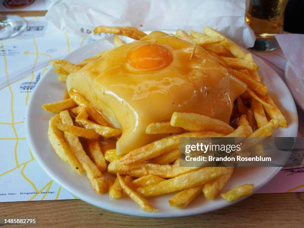

Prato típico do Porto, aconselhável a que se sirva sempre acompanhado de batas fritas caseiras
Ingredientes
- 1/2 Cebola
- 1 Dente de alho
- 330ml de cerveja
- 100g de tomate picado
- 30g de manteiga
- 15ml de molho Perrins ou Worcestershire
- 20ml de caldo de verdura
- 10g de farinha fina de milho
- 3 rabanadas de pão de molde braco
- 2 files de lombo de porco
- 1 fatia de presunto cozido
- 2 ou 3 salsichas
- 8 fatias de queijo para sandwich (fundente)
Modo de preparação
- Comece por refogar em azeite a cebola picada e o alho. Quando alourar juntar a cerveja e de seguida os restantes ingredientes, excepto o amido de milho. Deixe ferver cerca de 15 minutos.
- À parte dissolva o amido de milho num pouco de água. Junte ao molho aos poucos até este adquirir uma consistência a gosto. Retire o tacho do lume, tire a folha de loureiro e com uma varinha mágica rale tudo. Leve novamente ao lume e rectifique o tempero se necessário.
- Enquanto faz o molho vá preparando a francesinha: Tempere os bifes com sal de pimentas e leve a grelhar. Faça o mesmo para a salsicha fresca e a linguiça (grelhar de preferência abertas ao meio).
- Montagem da francesinha:
- Fatia de pão de forma
- Uma fatia de fiambre
- Duas fatias de mortadela
- O bife (barrar com um pouquinho de mostarda-opcional)
- A salsicha e linguiça abertas ao meio
- Uma fatia de queijo
- Outra fatia de pão por cima
- Agora deve levar à torradeira para torrar um pouquinho o pão
- Cobrir com 5 fatias de queijo
- Colocar o ovo
- Levar à torradeira (ou forno) para derreter o queijo
Home Page